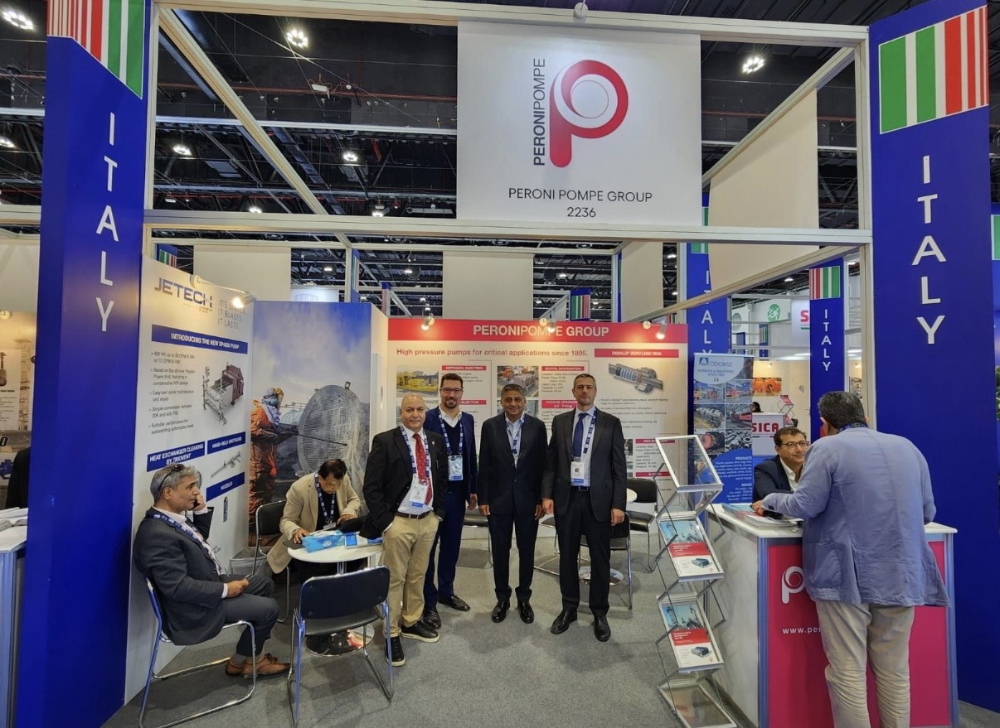

01 / Exhibition & International Communication
International Trade Show Communication
For four international exhibitions, I translated industrial product information into booth-scale panels, films, and rendered assets that supported customer conversations.
- Input
- Product priorities, engineering material and exhibition constraints
- Decision
- Built a distance-aware hierarchy across panels, films and rendered assets
- Collaboration
- Engineering accuracy aligned with marketing and international sales needs
- Outcome
- Exhibition graphics and marketing assets delivered across 4 international trade shows
- 01Product prioritiesEngineering and commercial input
- 02Information hierarchyMessage, scale and viewing distance
- 03Format adaptationPanels, booth films and localized assets
- 04Final deliveryExhibition-ready production files
- 01ADIPEC 2025Abu DhabiPanel + booth application
- 02Powertech 2026International exhibitionLarge-format product panel
- 03Sea JapanFirst-time exhibitor · JapanLocalized panel + booth film
- 04Australian Energy ProducersAdelaideStand graphics + booth film